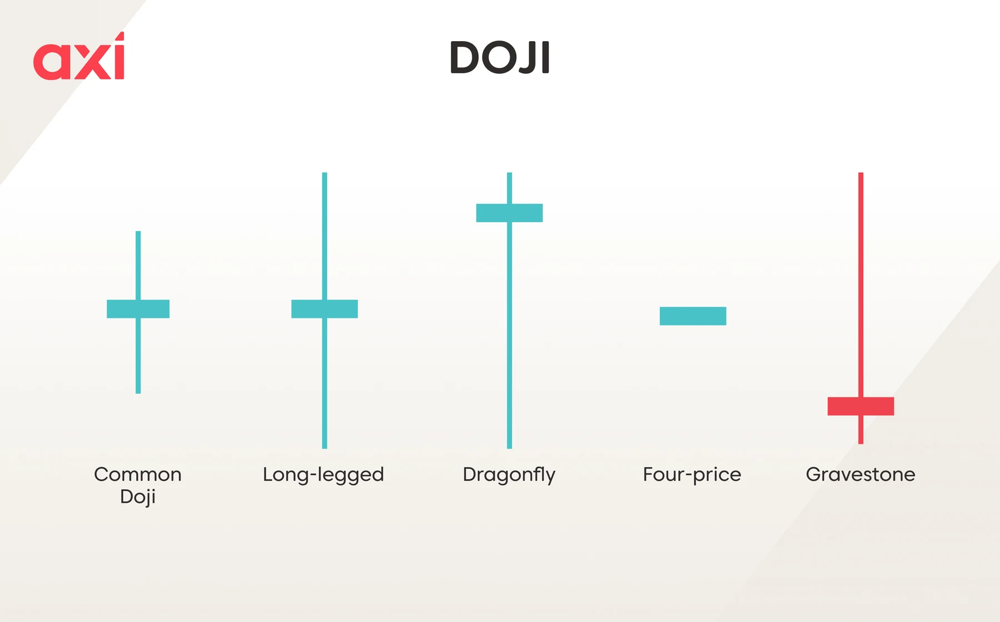

Четирите стойности
- Open: цена на отваряне.
- Close: цена на затваряне.
- High: най-висока цена за периода.
- Low: най-ниска цена за периода.
Една свещ показва как цената се е движила през избрания период. Формата ѝ може да подскаже дали купувачите или продавачите са имали превес, но значението зависи от мястото, на което се появява.
Всяка свещ съдържа четири основни ценови стойности.
Една H1 свещ обобщава един час, а една D1 свещ – един ден. Една и съща форма на различни таймфрейми може да има различна тежест.
Те могат да показват отхвърляне на цена, но искат контекст.
Малко тяло, дълга долна сянка и малка горна сянка. След спад може да показва, че купувачите са върнали цената нагоре.
По-смислен е близо до подкрепа и след затваряне на свещта. Следващата свещ може да даде потвърждение.
Малко тяло и дълга горна сянка след спад. Показва опит за покачване, но не и автоматично обръщане.
Изчакай потвърждение от следващи свещи или структура.
Прилича на чук, но се появява след покачване. Дългата долна сянка подсказва, че продавачите са успели да натиснат цената надолу през периода.
Малко тяло и дълга горна сянка след покачване. Може да показва отхвърляне на по-високите цени.
Open и Close са много близо един до друг.
Дожи показва колебание: през периода цената може да се е движила нагоре и надолу, но накрая е затворила близо до началото. Това не означава само по себе си нито BUY, нито SELL.
След силно движение дожи може да подсказва пауза или нерешителност. На важна подкрепа или съпротива е по-интересно, но е необходимо следващо потвърждение.

Свещ с много малки или липсващи фитили.
Силно тяло нагоре. Купувачите са контролирали почти целия период.
Силно тяло надолу. Продавачите са контролирали почти целия период.

Свещта е доказателство за реакция, не самостоятелна стратегия.
Да продаваш при всяка Shooting Star или да купуваш при всеки Hammer. Моделът е по-смислен, когато се появява на подходящо място и е потвърден.
Появява се Shooting Star по средата на страничен диапазон. Достатъчно ли е това за SELL?
Отговор: Не. Нужни са контекст, ключово ниво и потвърждение.